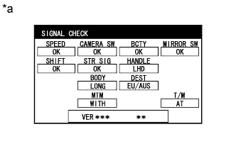
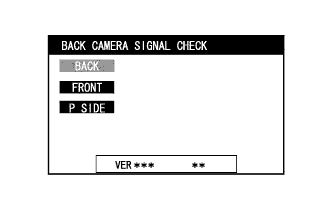
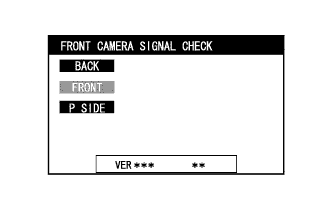
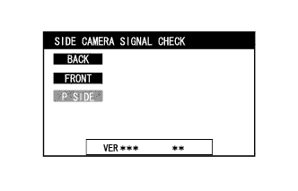
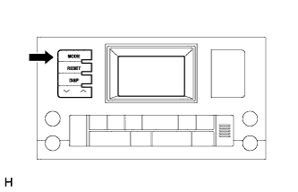
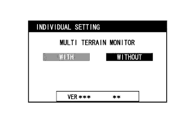
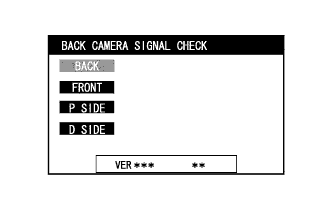
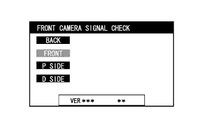
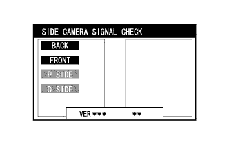

REAR VIEW MONITOR SYSTEM (w/ Side Monitor System) > CALIBRATION |
| ADJUST REAR VIEW MONITOR SYSTEM |
This rear view monitor system can be set from the diagnostic screen of the accessory meter assembly.
If the following operations are performed, it is necessary to perform adjustments and checks on the diagnostic screen.
| Part Name | Operation | Adjustment Item | Proceed to |
| Parking assist ECU | Replacement | Parking assist ECU initialization | Signal Check |
| Rear television camera assembly |
| Rear television camera position setting | Camera Setting (w/o Multi-terrain Monitor) Camera Setting (w/ Multi-terrain Monitor) |
| SIGNAL CHECK |
Start diagnostic mode.
Turn on the screen of the accessory meter assembly.
Press the retract switch to move the mirrors to the retracted position.
Operate the light control switch:
Off → Turn on → Turn off → Turn on → Turn off → Turn on → Turn off.
|  |
The SIGNAL CHECK screen is displayed.
| *a | Example |
| CAMERA SETTING (w/o Multi-terrain Monitor) |
|  |
BACK CAMERA SIGNAL CHECK
Press the wide view front and side monitor switch on the steering pad switch assembly.
|  |
FRONT CAMERA SIGNAL CHECK
Press the wide view front and side monitor switch on the steering pad switch assembly.
|  |
SIDE CAMERA SIGNAL CHECK
Press the wide view front and side monitor switch on steering pad switch assembly.
Finish diagnostic mode.
Method 1
|  |
Method 2
| CAMERA SETTING (w/ Multi-terrain Monitor) |
|  |
INDIVIDUAL SETTING
Check that the multi-terrain monitor has "WITH" selected.
Press the wide view front and side monitor switch on the steering pad switch assembly to proceed to the next signal check.
|  |
BACK CAMERA SIGNAL CHECK
Press the wide view front and side monitor switch on the steering pad switch assembly.
|  |
FRONT CAMERA SIGNAL CHECK
Press the wide view front and side monitor switch on the steering pad switch assembly.
|  |
SIDE CAMERA SIGNAL CHECK
Press the wide view front and side monitor switch on the steering pad switch assembly.
Finish diagnostic mode.
Method 1
Method 2